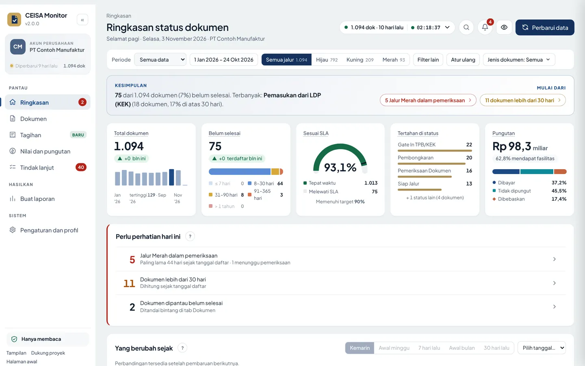
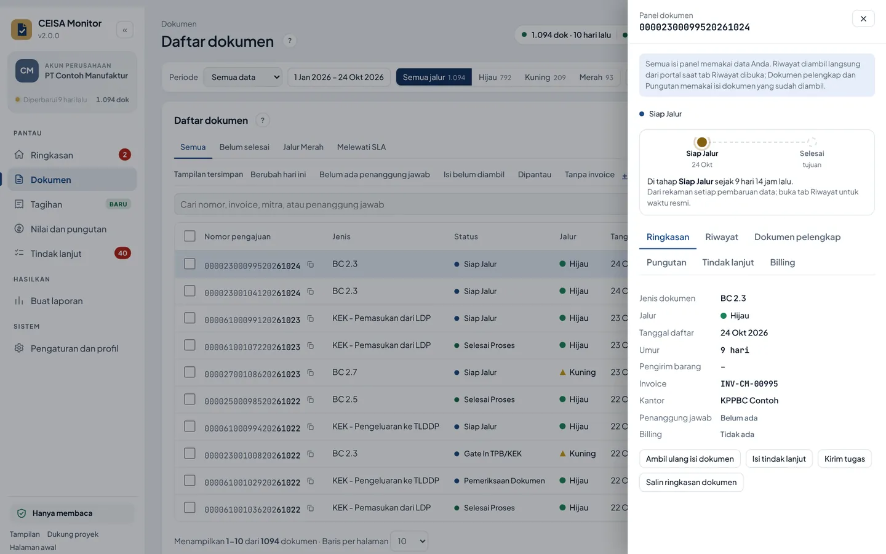
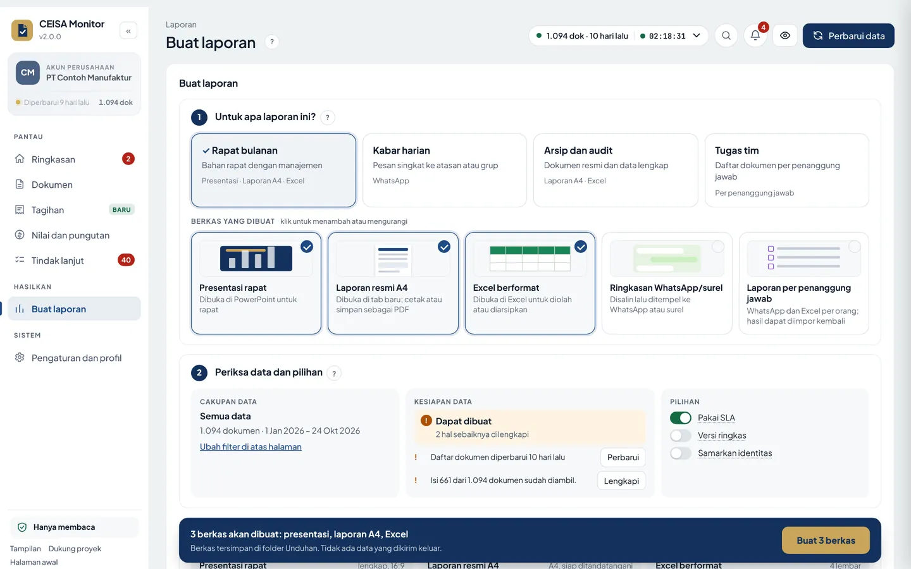
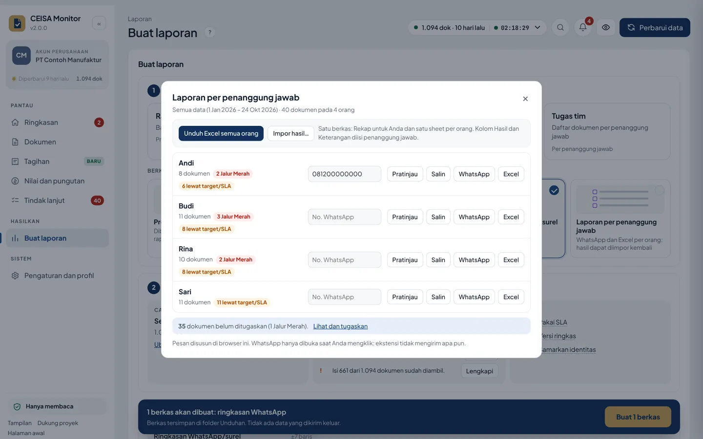

Hanya dengan portal CEISA 4.0
- Status dicek per nomor pengajuan, berpindah-pindah halaman
- Dokumen yang perlu ditangani hari ini dicari sendiri
- Tugas untuk tim diketik satu per satu ke WhatsApp
- Bahan rapat dan laporan disusun ulang setiap bulan
Untuk tim ekspor-impor di CEISA 4.0: baca status, bagi tugas, dan susun laporan rapat.
Gratis dari Chrome Web Store, tanpa akun, tanpa server pihak ketiga.
CEISA Monitor adalah alat independen buatan pengguna, bukan produk resmi dan tidak berafiliasi dengan Direktorat Jenderal Bea dan Cukai.




Setiap tahap di CEISA 4.0 terpantau. Sesudah pemeriksaan, dokumen kembali dihitung belum selesai biasa sampai Selesai Proses.
Nomor pengajuan, tanggal daftar, dan jenis dokumen.
Siap Jalur: Hijau, Kuning, atau Merah.
Jalur Merah dalam pemeriksaan: tampil di Perlu perhatian hari ini.
Masih belum selesai, tetapi bukan lagi Jalur Merah dalam pemeriksaan.
Waktu penyelesaian dan Sesuai SLA untuk laporan rapat.
Angka di setiap berkas sama persis dengan dasbor dan mengikuti filter yang sedang aktif. Semua dibuat di browser dan tersimpan di folder Unduhan.
Perkiraan dari isian Anda, dengan anggapan pemantauan lewat CEISA Monitor sekitar 10 menit per hari kerja dan laporan dibuat dalam 30 menit. Bukan jaminan hasil.
Daftar dokumen, isi dokumen, riwayat status, dan billing akun Anda, memakai sesi login Anda sendiri di tab portal.
Tidak mengisi, mengirim, atau mengubah apa pun di portal. Nama dan NIP petugas tidak diambil. Kata sandi tidak disentuh.
Hanya di penyimpanan lokal browser ini. Tanpa server pihak ketiga. Cadangan .ceisadata dibuat dan dibuka oleh Anda sendiri.
Untuk Chrome dan Microsoft Edge versi 116 atau lebih baru. Pasang hanya dari Chrome Web Store, penerbit Trias EXIM.
Coba dasbor langsung di browser dengan data contoh fiktif, tanpa memasang apa pun dan tanpa login portal.
Ekstensi hanya membaca data dari tab portal CEISA 4.0 yang Anda buka, dengan sesi login Anda sendiri. Ekstensi tidak mengisi, mengirim, atau mengubah apa pun di portal. Nama dan NIP petugas tidak diambil.
Di penyimpanan lokal browser ini saja. Tidak ada server pihak ketiga. Untuk pindah komputer, gunakan cadangan .ceisadata di Pengaturan.
Data ditarik saat Anda meminta, dengan jeda antarhalaman. Pemantauan otomatis tersedia sebagai pilihan dan mati secara bawaan; bila dinyalakan, permintaan dijalankan satu per satu dan berhenti sendiri saat sesi portal berakhir.
Ya. Dokumen yang terdaftar dengan NPWP 15 digit ikut ditarik dan digabung ke akun yang sama. Dokumen yang belum final lebih dari setahun dipisahkan dari angka utama, tanpa mengubah statusnya.
Tidak. Pesan disusun di browser; WhatsApp hanya dibuka saat Anda mengklik, dan Anda sendiri yang menekan kirim.
Pasang gratis, lalu coba mode demo atau langsung tarik data dari portal Anda.